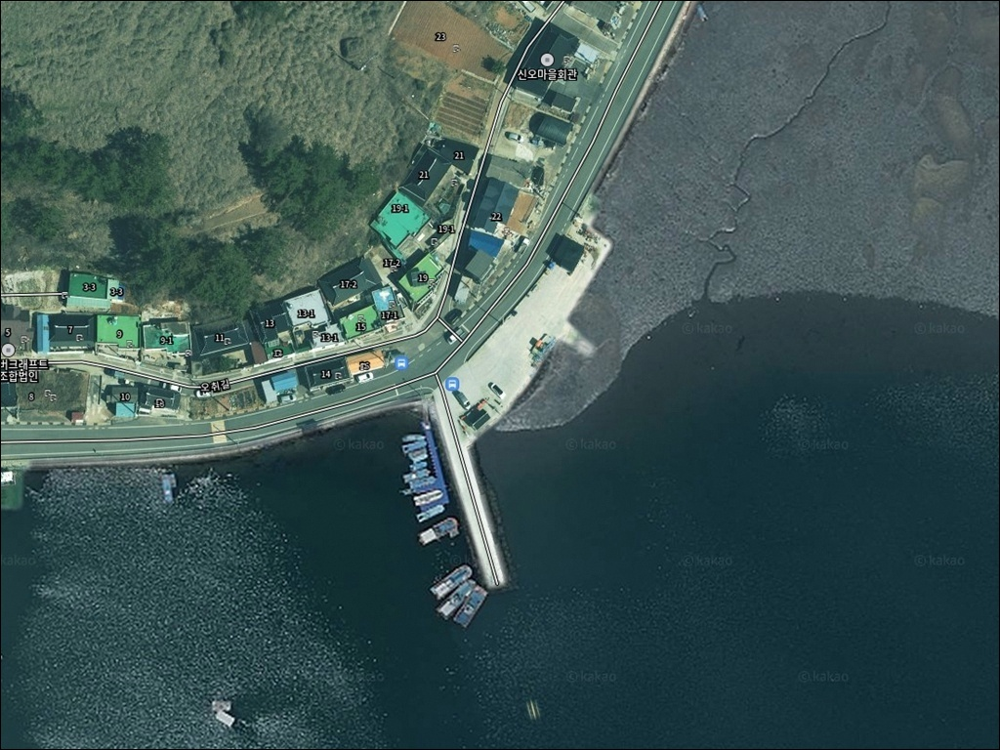
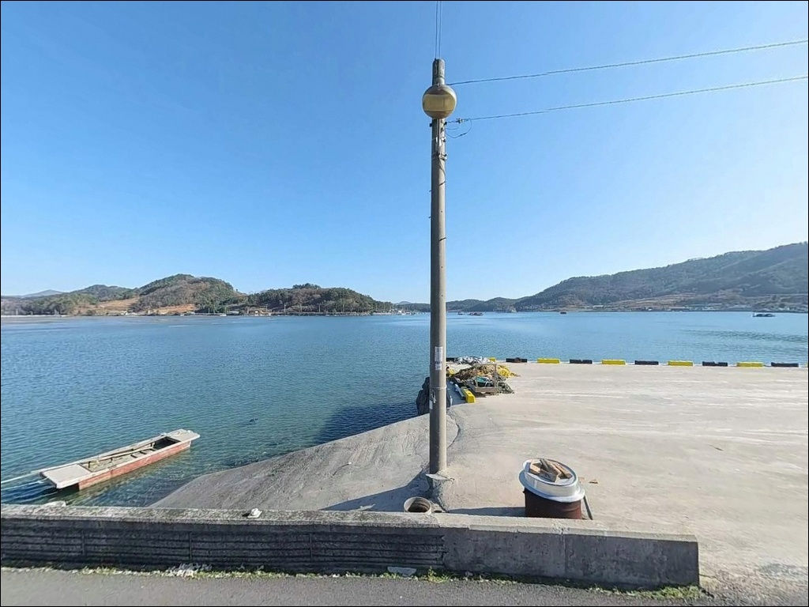
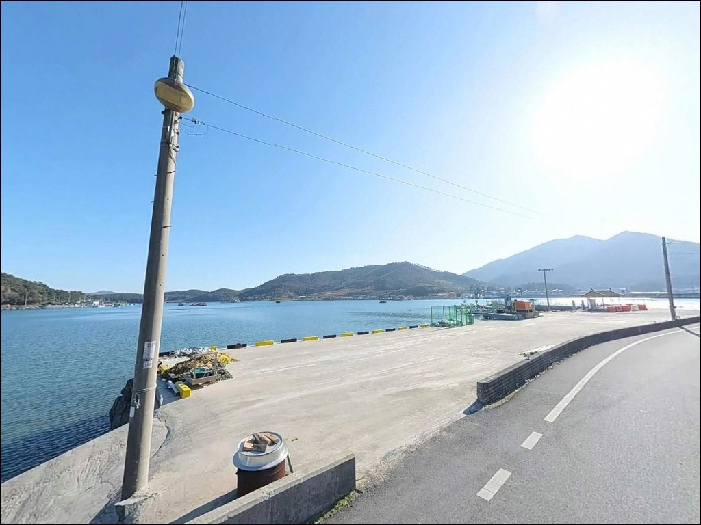
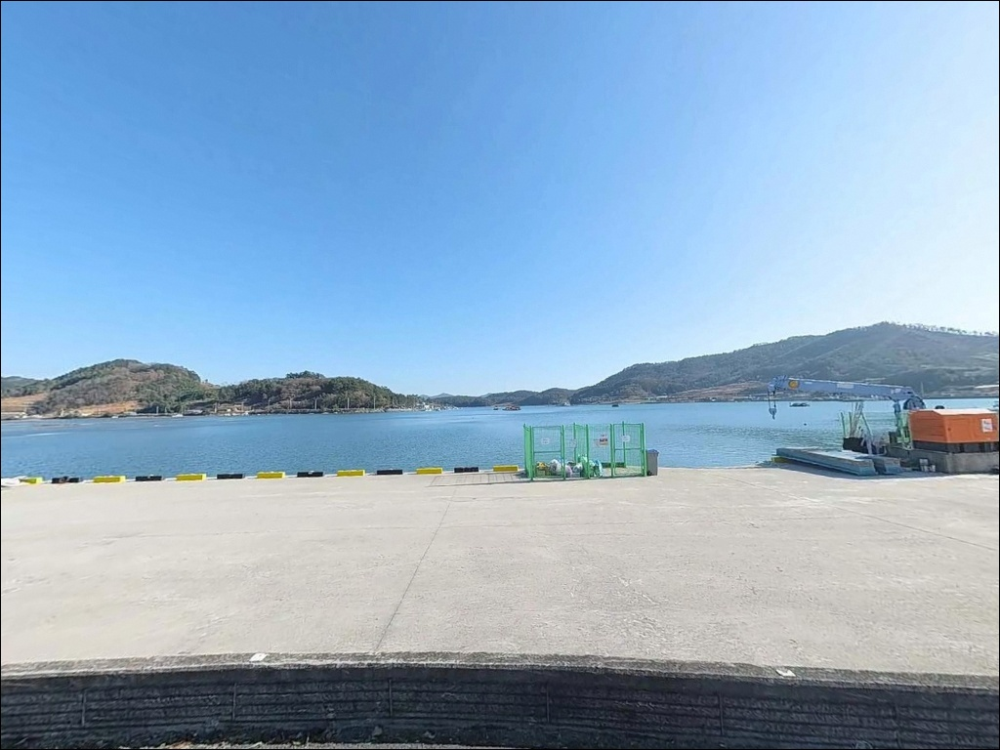
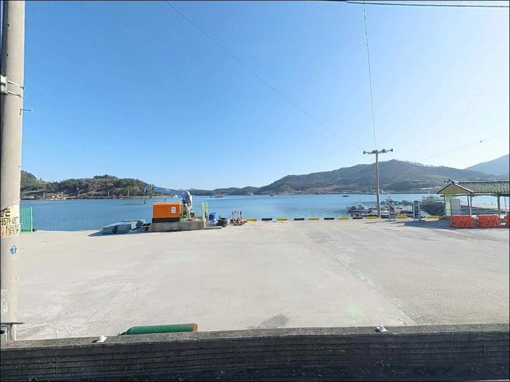
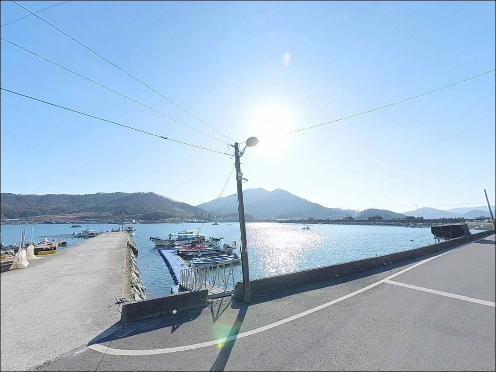
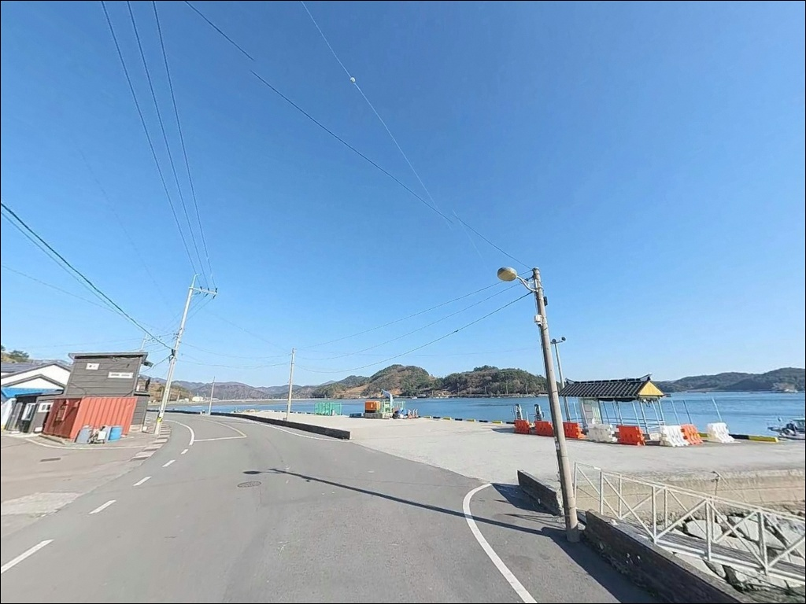
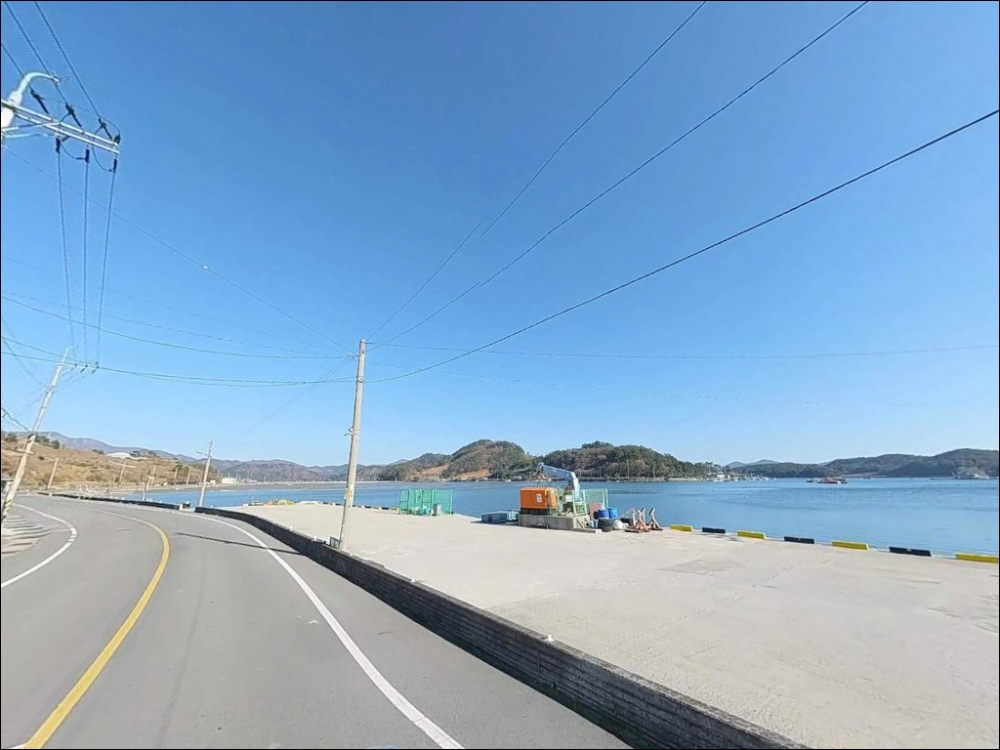
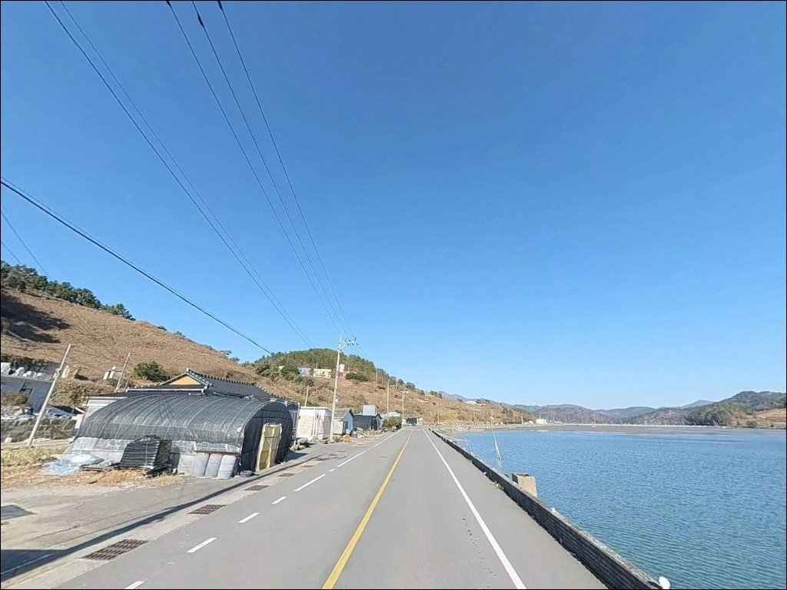

고흥 신오방파제, 간조 수심 4m 끝단에서 조류 살아날 때 터진 입질
이 페이지에는 광고(제휴 링크 포함)가 있으며, 광고 링크를 통해 구매하면 운영자가 판매 수익 또는 수수료를 받을 수 있습니다. 포인트 사진: 카카오맵 스카이뷰·로드뷰. 이 페이지의 지도·사진 이미지는 카카오맵의 실제 서비스 이미지와 다를 수 있습니다.


포인트 안내
신오방파제
전남 고흥군 포두면 오취리 190-63
외항 테트라포트 끝단에 자리를 잡았는데도
입질이 없다면, 조류 타이밍을 놓쳤을 가능성이 큽니다.
신오방파제는 해창만 내만 구조라
물때에 따라 조류 흐름이 살아나는 시간대가
뚜렷하게 구분되는 포인트입니다.
타이밍을 맞추느냐 아니냐가
이 방파제에서의 조과를 결정합니다.
이 글은 신오방파제의
진입 동선, 차박 여건, 물때 판단 기준,
낚시 스타일별 공략 조건에 집중합니다.
조황 단정이나 특정 어종 보장은
이 글의 범위에 포함되지 않습니다.

1. 진입 동선과 포인트 접근성
포두면 소재지에서 오취리 방면으로 이어지는
도로는 평탄한 아스팔트 포장도로입니다.
급경사 구간이 없고 비포장 구간도 없어
일반 승용차부터 대형 캠핑카·카라반까지
무리 없이 진입할 수 있는 구조입니다.
항만 내 부지가 넓어 대형 차량의 회차도
현장에서 직접 처리가 가능합니다.
방파제 시작 지점과 내항 쪽 아스팔트 구간에
주차 공간이 확보되어 있으며,
낚시 포인트와 주차 지점 사이 거리가 가까워
장비 이동 부담이 적은 편입니다.
항구 내 가로등이 설치되어 있어
야간 장비 세팅과 이동에 불편함이 없습니다.
주변 민가와 적당한 거리를 두고 있어
야간 낚시 환경도 안정적인 구조입니다.

2. 차박 환경과 야간 체류 여건
신오방파제는 해창만 안쪽에 위치한
내만형 구조라 외해 파도 영향이 제한적입니다.
강한 남서풍이 부는 날을 제외하면
대부분의 날씨 조건에서
비교적 조용한 야간 체류 환경이 만들어집니다.
항구 내 가로등이 있어 완전 암흑 환경은 아닙니다.
민가와 거리를 두고 있어
차박 프라이버시는 무난한 수준이며,
야간 차량 통행이 드문 어촌 항구 특성상
소음 환경은 조용한 편입니다.
방파제 입구 인근에 공중화장실이
설치된 구조라 장시간 체류에도
기본 편의를 갖춘 포인트입니다.
스텔스 차박 형태가 이 포인트에 어울립니다.
공식 캠핑장이 아닌 항만 구역이므로
취사보다는 간단한 식사 준비 수준으로
운용하는 것이 현실적입니다.


3. 주변 편의시설 및 인프라 현황
방파제 입구 인근에 공중화장실이 확정되어 있습니다.
포두면 소재지까지는 차량으로 5~8분 거리이며,
마트와 식당을 이용할 수 있는
기본 생활 인프라가 갖춰진 권역입니다.
출조 전 보급은 포두면 소재지에서
한 번에 해결하고 진입하는 방식이 효율적입니다.
응급 상황 발생 시에는 고흥읍까지
차량으로 15~20분 거리에
고흥종합병원과 약국이 있습니다.
출발 전 비상약품과 충분한 수분을
챙겨두는 편이 좋습니다.

4. 진입 전 반드시 챙겨야 할 준비사항
신오방파제 방문에서 가장 먼저 확인할 것은
물때입니다.
해창만 내만 구조 특성상 사리 전후에는
조류가 강해지고 조금 전후에는
흐름이 살아나는 타이밍이 구분됩니다.
바다타임에서 오취리 기준 물때를 확인하고
조류가 형성되는 타이밍에 맞춰
출발 시각을 조율하는 것이 기본 전략입니다.
외항 테트라포트는 경사가 있고
이끼가 낄 수 있어 미끄럼 위험이 있습니다.
구명조끼와 미끄럼 방지 신발은
테트라포트 위에서는 필수입니다.
방파제 끝단은 가로등 밝기가 줄어드는 구간이므로
헤드랜턴은 야간 입장 전에 반드시 확인해야 합니다.
선착장 주변은 어민 작업 공간입니다.
어선 이동 동선을 막지 않는 자리를 잡고,
어구와 접촉하지 않도록 주의하는 것이
기본 매너입니다.
낚시 후 미끼 찌꺼기, 담배꽁초, 쓰레기는
반드시 회수해서 돌아오는 것이 원칙입니다.

5. 외항 테트라포트에서 조과가 달라지는 조건
신오방파제는 L자형으로 꺾인 메인 방파제와
내항 선착장으로 구성된 구조입니다.
외항 쪽에는 테트라포트가 놓여 있으며,
방파제 끝단은 물골과 인접하여
조류 소통이 원활한 자리가 형성됩니다.
간조 시에도 끝단 기준 4~6m 이상 수심이
유지되는 구조입니다.
바닥 지형은 뻘과 모래가 주를 이루며,
방파제 주변으로 인공어초와 여밭이
형성되어 있습니다.
이 구조가 어류의 은신처 역할을 하며
다양한 어종이 주변에 머무는
지형 조건을 갖추고 있습니다.
내항은 수직벽과 석축 구조로 이루어져
찌낚시 운용에 안정적인 환경입니다.
원투낚시에서는 바닥 밑걸림이 적은 편이라
채비 손실 부담이 낮습니다.
방파제 끝단과 수로 방향으로 캐스팅하면
조류가 모이는 지점을 효과적으로 공략할 수 있습니다.
출조 전 최신 조황은 반드시
검색해 보시기 바랍니다.


6. 포인트에 어울리는 낚시 스타일
이 포인트에서 시즌 반응이 뚜렷한 낚시는
갑오징어 에깅입니다.
9월부터 11월 사이 갑오징어와 주꾸미가
방파제 전역 내·외항을 가리지 않고
활발하게 반응하는 시즌입니다.
에깅 채비를 기본으로 두고
내항과 외항을 번갈아 탐색하는 방식이
이 시즌에 가장 잘 맞습니다.
감성돔 찌낚시는 외항 테트라포트 끝단에서
조류가 흐르는 타이밍에 집중합니다.
숭어와 학공치 등 잡어 반응도
함께 기대할 수 있는 구간입니다.
반유동 채비로 조류를 타고 흘리는 방식이
이 포인트 지형과 잘 맞습니다.
원투낚시는 밑걸림이 적은 뻘+모래 저질 덕분에
초보자도 부담 없이 즐길 수 있는 스타일입니다.
도다리, 성대, 붕장어가
이 지형 조건에서 기대해볼 수 있는 어종이며,
정조 전후 타이밍에 바닥 탐색을 집중하면
효과적입니다.

7. 대안 포인트와 플랜 B 동선
신오방파제가 만석이거나
조류 조건이 맞지 않을 때
첫 번째 대안은 오취방파제입니다.
차량으로 3분 거리에 있으며
규모는 작지만 한적한 환경에서
낚시를 이어갈 수 있는 포인트입니다.
동일 해역 조건을 공유해
비슷한 어종 패턴을 기대할 수 있습니다.
더 넓은 시설이 필요하다면
발포방파제로 이동하는 동선이 유효합니다.
대규모 시설과 다양한 어종 구성을 갖춘 포인트로,
신오방파제와 묶어 하루 일정으로
2곳을 탐색하기 적합한 거리입니다.
차박을 메인으로 고려한다면
발포해수욕장 주차장이
화장실과 편의시설 관리가 더 체계적인
대체 후보입니다.
낚시와 차박 조건을 함께 살리고 싶다면
해창만 간척지 공원 오토캠핑장도
포두면 팔영로 방향으로 접근할 수 있습니다.

물때 맞추면 갑오징어부터
감성돔까지 노릴 수 있는 자리입니다
에깅이나 찌낚시를 주력으로 즐기는 낚시인이라면
신오방파제의 외항 테트라포트 끝단은
조류가 살아날 때 충분히 집중할 만한 자리입니다.
L자형 방파제 구조가 내항과 외항 여건을
함께 제공하기 때문에
복수의 낚시 방식을 한 포인트에서
번갈아 운용하기 좋습니다.
반면 물때 계산 없이 사리 전후에
진입하거나, 조류 타이밍을 맞추지 못하면
테트라포트 위에서 빈 채비만 걷어 올리는
상황이 반복될 수 있는 포인트이기도 합니다.
바다타임 물때 확인, 진입 전 장비 점검,
포두면 소재지에서 사전 보급,
이 세 가지를 갖추고 출발한다면
신오방파제는 기대에 부응하는 출조가 됩니다.
항만 부지가 넓고 공중화장실까지 갖춘 구조라
낚시를 마친 뒤 차 안에서 조용히 하룻밤 머무는
스텔스 차박을 함께 운용하기에도
나쁘지 않은 포인트입니다.